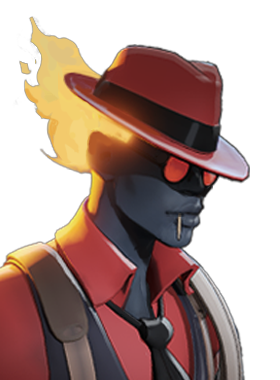

Napalm
Spew an incendiary mixture, dealing spirit damage, applying slow, and coating targets in napalm. Napalm increases the damage taken by affected enemies and reduces their healing.

They'll be nothin' but ash when i'm through.
Spew an incendiary mixture, dealing spirit damage, applying slow, and coating targets in napalm. Napalm increases the damage taken by affected enemies and reduces their healing.
Dash forward, gaining slow resistance while leaving a flaming trail that deals spirit damage over time. Hold Move forward while active to dash farther. Infernus can cast other abilities and items during the dash without breaking it.
Weapon hits build up a burning effect, dealing spirit damage over time. Abilities refresh the base burn duration and weapon hits extend it. Headshots build up faster than body shots.
Become a living bomb, dealing spirit damage and applying stun to all nearby enemies after a delay. Once cast, Concussive Combustion cannot be interrupted.
Like most teenagers, Infernus was wild, rebellious, and impetuous. Unlike most teenagers, Infernus was a creature from another plane and had a supernatural mastery over fire. Needless to say: his youth was filled with no small amount of arson, murder, and evidence disposal.
But that was then. Now an adult, Infernus has mellowed out considerably. He's happy working at a bar with good live music, and talking to interesting people. That being said when someone at the bar gets belligerent or violent, he's not afraid to dust off the skills he once honed.
He fights in the ritual to save Jezebel's, the bar he calls home, from closure.